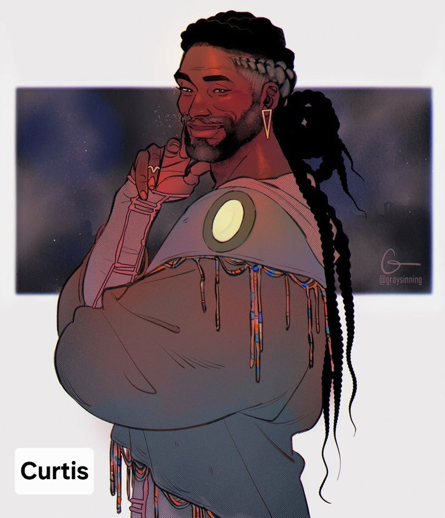
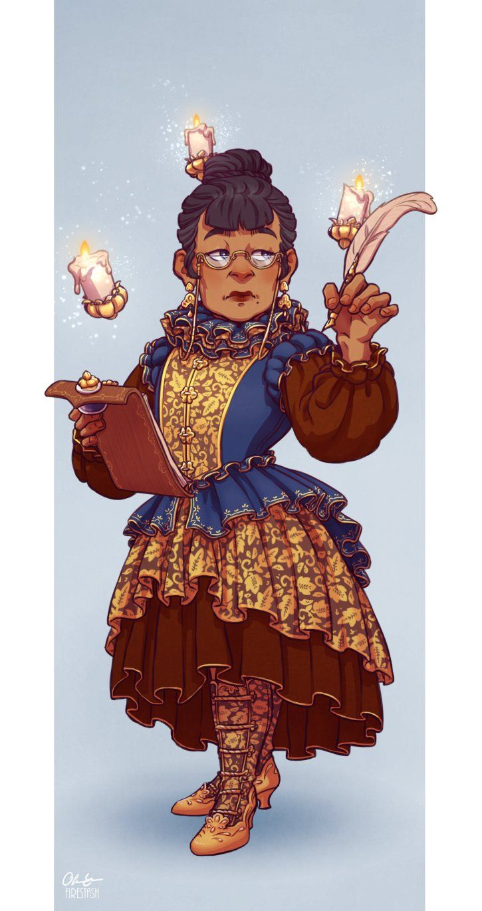
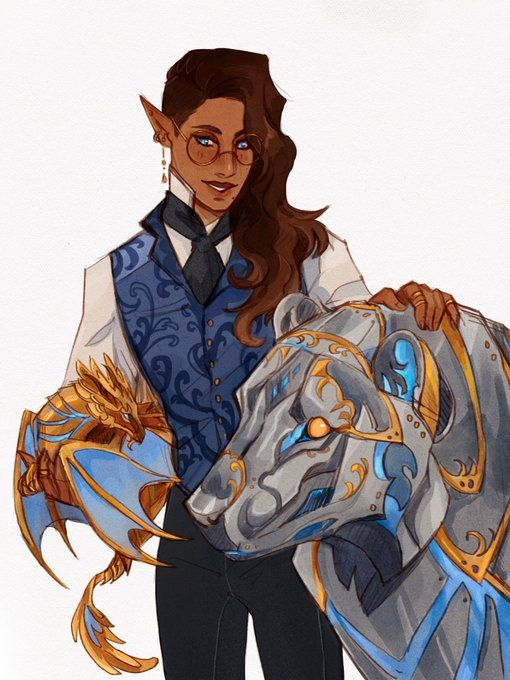
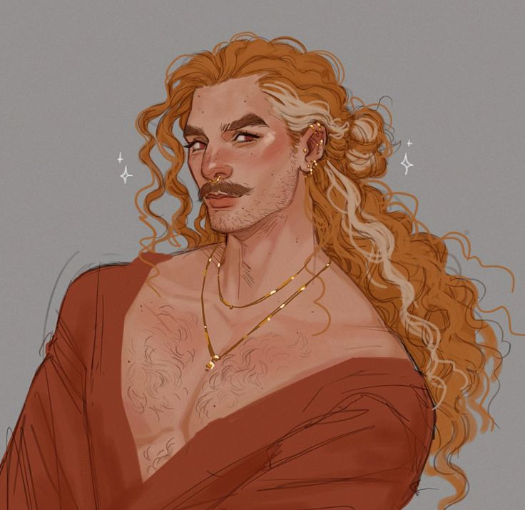
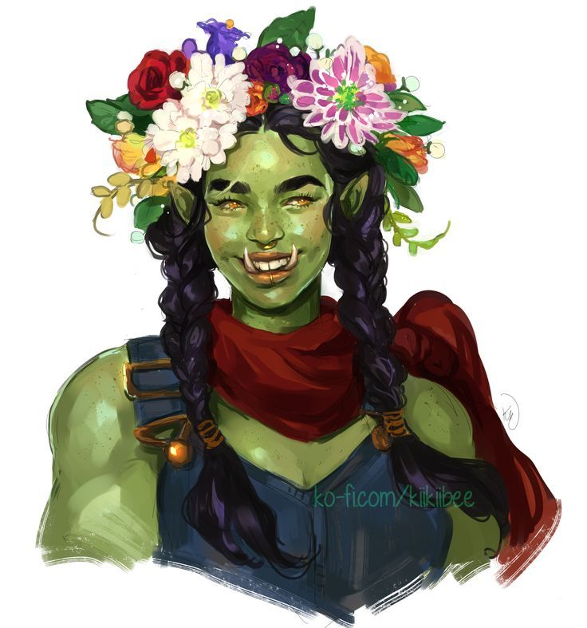
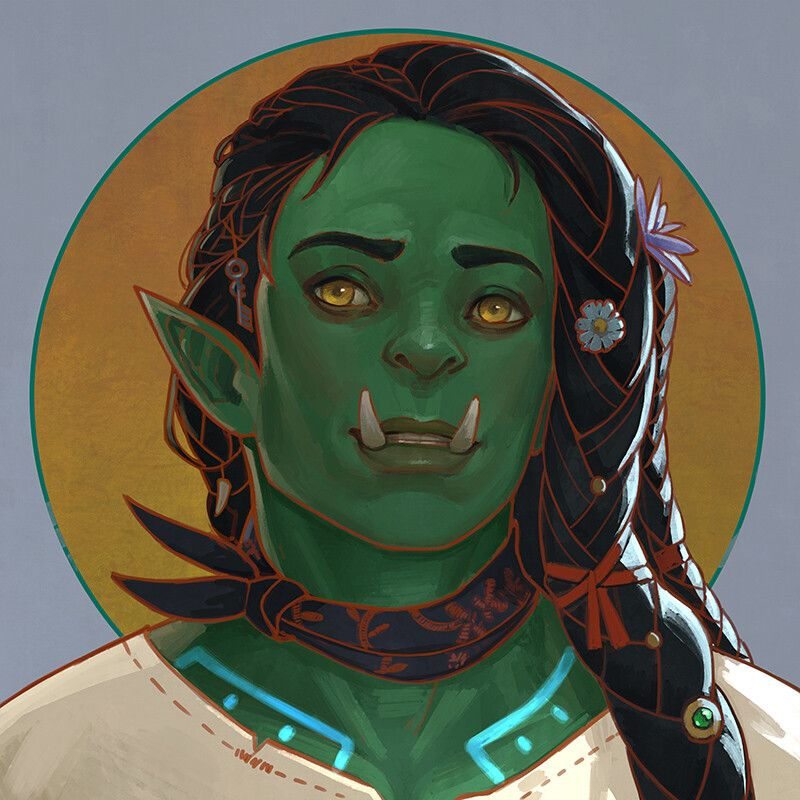
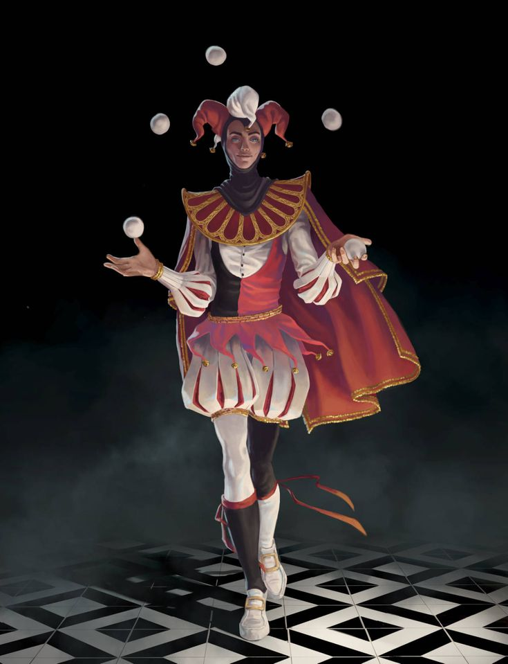
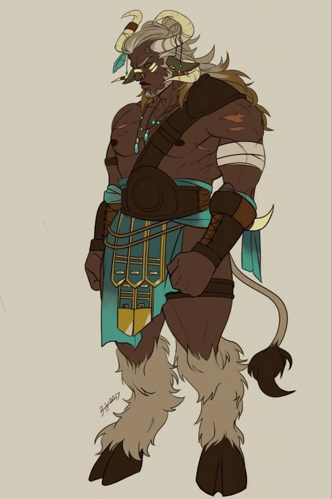
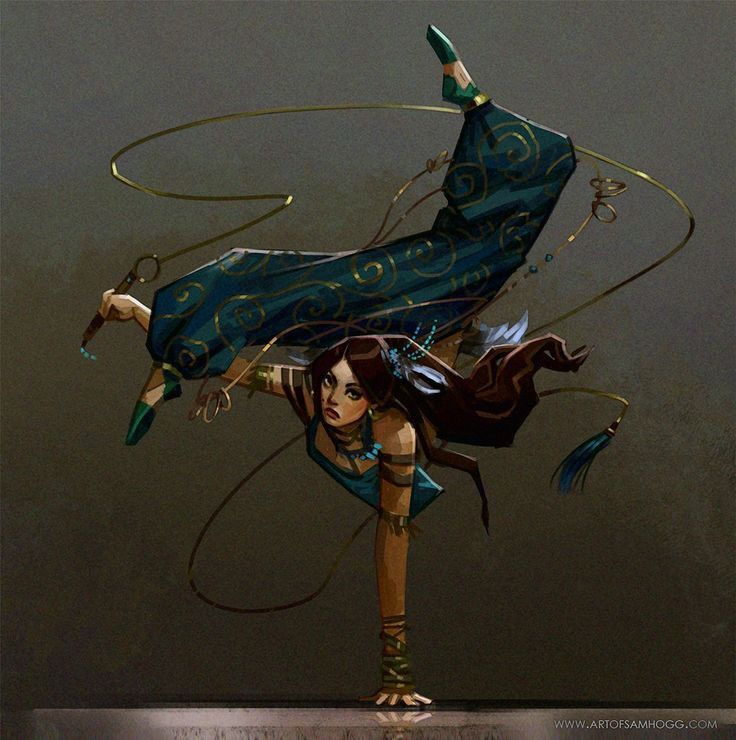
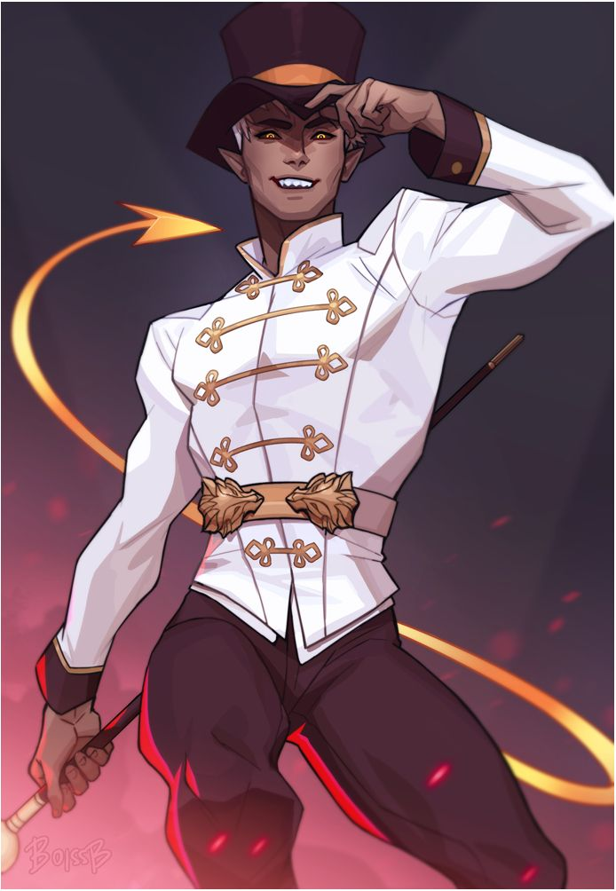

Prezada e respeitável plateia, após a chegada da ilustre Caravana dos Céus, tenho o prazer de lhes apresentar as mais esplêndidas e grandiosas estrelas que integram nosso espetáculo!

✦ O Sonoplasta
Calias
Responsável pela sonoplastia do circo e ajudante de Mariene, é um homem muito gentil com todas e extremamente talentoso, tendo uma das vozes mais lindas. Criou a Cellyn junto com seu marido depois do falecimento de sua mãe, que era grande amiga de Calias.

✦ A Dona
Mariene
Descrição...

✦ A Engeheiro
Kris
Cuida das barraquinhas e das instalações, além de ter um fascínio por robótica. Mas, infelizmente, elu não faz parte dos números.

✦ O Mágico dos Céus
Cirus
Marido de Calias, é o mágico da Caravana dos Céus, sendo um dos pilares para a criação de Cellyn. É uma pessoa bem humilde e tem um forte senso de moda. Ele perdeu a audição do ouvido esquerdo após um truque.

✦ A Palhaça da Comédia
Jannete
Uma orc adotada por Mariene em uma das viagens do circo, ela aprendeu a rir e ver o lado bom das coisas. Seu número é em conjunto com a sua irmã, Janniene.

✦ A Palhaça da Tragédia
Jannine
É a mais velha das gêmeas, foi ela quem se perdeu entre as árvores grossas e retorcidas e foi resgatada por Mariene. Mesmo não gostando, ela trabalha ao lado de sua irmã como gratidão a Mariene por salvar sua vida do frio.

✦ O Malabarista
Mohamed
Não se sabe ao certo como e quando Mariene o acolheu no circo, apenas que o público gosta dos seus números...

✦ O Homem Touro
June
Mudo, ele chama atenção por onde vai. É dedicado às tarefas, normalmente carregando Mariene quando ela está cansada. Seu número consiste em levantar pesos impossíveis para pessoas comuns e ser auxiliar nas apresentações de Cirus.

✦A Contorcionista
Elaine
Uma refugiada que se escondeu na Caravana dos Céus... Enfim, seu número é o mais aguardado, cheio de tensão a cada dobra que ela realiza no próprio corpo.

✦ O Domados de Feras
Haydes
Confiança pode ser a palavra que ele mais transmite. Muito popular pelo seu espetáculo, ele domina as mais diversas feras conhecidas e catalogadas de todos os reinos.